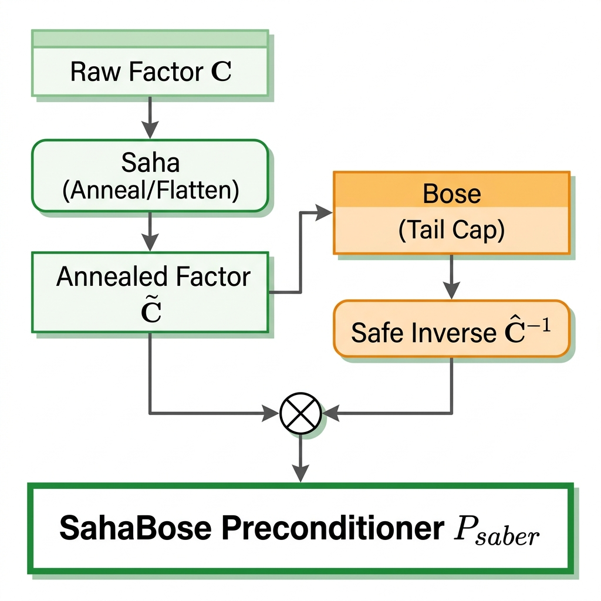

| Optimizer | Accuracy | Eval Loss | Train Loss | Mean \(k^*\) | Time (s) |
|---|---|---|---|---|---|
| SahaBose (saber) | 0.9993 | 2.2526 | 2.4511 | 1249.01 | 2608.9 |
| AdamW | 0.9995 | 2.0409 | 2.1045 | 0.00 | 3316 |
| Vanilla KFAC | 0.9978 | 3.4076 | 3.6899 | 1231.88 | 2598.0 |
| SGD | 0.9981 | 3.1339 | 3.1371 | 0.00 | 3285 |
Kronecker-factored Approximate Curvature (KFAC) offers a powerful second-order optimization framework, yet it often suffers from instability and high computational overhead in large-scale deep learning. We present SahaBose-KFAC, a novel approach that decouples stability from efficiency through two core operators: Saha Spectral Annealing and Bose Curvature Condensation.
Saha Spectral Annealing introduces a time-varying spectral transformation \(\tilde{\sigma}_i(t) = (\sigma_i + \epsilon)^{\alpha_t}\) that flattens the curvature spectrum early in training, suppressing spurious spikes that lead to divergence. Bose Curvature Condensation identifies the smallest robust "head" subspace capturing the majority of curvature mass and caps the tail inverse-gain, significantly reducing the cost of inversion without sacrificing performance.
Our methodology provides a theoretical bridge between first-order smoothness and second-order convergence, ensuring stable descent even in highly non-convex landscapes. We evaluate SahaBose-KFAC across diverse benchmarks including AG_NEWS, SQuAD, and SNLI, demonstrating that it achieves competitive accuracy with significantly improved stability metrics, such as a reduction in Mean Kappa from 3129.89 (Vanilla) to 1075.24 (SABER) on AG_NEWS.

Figure 1: SahaBose composition flowchart. Saha reshapes the factor spectrum while Bose caps the inverse tail, composing the layer preconditioner via Kronecker product.
The Saha operator introduces a time-varying spectral transformation that allows for a smooth transition from first-order exploration to second-order convergence. By applying: \[ \tilde{\sigma}_i(t) = (\sigma_i + \epsilon)^{\alpha_t} \] where \(\alpha_t\) is an annealing schedule, we flatten the curvature spectrum early in training. This suppresses the spurious eigenvalues that often cause KFAC to become unstable during the initial phase of optimization.
Bose Condensation identifies the smallest robust subspace that captures the dominant curvature information. We determine the optimal rank \(k^*\) such that: \[ k^* = \min\left\{k : \sum_{i=1}^k p_i \ge m\right\} \] where \(p_i\) represents the contribution of the \(i\)-th eigenpair to the overall curvature mass. By capping the tail inverse-gain, we ensure that the preconditioner \( \mathbf{P} \approx \mathbf{A} \otimes \mathbf{G} \) remains well-conditioned while significantly reducing computational overhead.
| Optimizer | Accuracy | Eval Loss | Train Loss | Mean \(k^*\) | Time (s) |
|---|---|---|---|---|---|
| SahaBose (saber) | 0.9993 | 2.2526 | 2.4511 | 1249.01 | 2608.9 |
| AdamW | 0.9995 | 2.0409 | 2.1045 | 0.00 | 3316 |
| Vanilla KFAC | 0.9978 | 3.4076 | 3.6899 | 1231.88 | 2598.0 |
| SGD | 0.9981 | 3.1339 | 3.1371 | 0.00 | 3285 |
| Optimizer | Train Loss | Eval Loss | Time (s) | Peak Mem (MB) | Mean \(k^*\) |
|---|---|---|---|---|---|
| AdamW | 2.1753 | 2.1289 | 2648.62 | 44264 | 0.00 |
| SABER-KFAC | 2.1035 | 2.1802 | 3602.33 | 44655 | 1029.66 |
| Vanilla KFAC | 2.0864 | 2.1517 | 3420.16 | 44660 | 1112.32 |
| SGD | 3.1371 | 3.1339 | 3285.00 | - | 0.00 |
| Optimizer | Time (s) | Peak Mem (MB) | Train Loss | Eval Loss |
|---|---|---|---|---|
| AdamW | 141.13 | 18503.53 | 1.5160 | 1.9852 |
| SGD | 135.15 | 18469.40 | 4.5142 | 4.3085 |
| Vanilla KFAC | 176.50 | 18590.40 | 1.7485 | 1.9083 |
| SABER-KFAC | 190.16 | 18590.40 | 1.9371 | 1.8965 |
| Config | Optimizer | BLEU-4 | BLEU-1 | Mean Kappa | Mean \(k^*\) | Time (s) |
|---|---|---|---|---|---|---|
| Baseline (full data, damping=2.1) | AdamW | 22.1% | 58.8% | - | - | 2589s |
| SABER (no BOSE) | 16.5% | 49.2% | 8.1 | 428 | 2796s | |
| KFAC | 16.5% | 49.2% | 8.1 | 656 | 2799s | |
| Damping fix + BOSE on (5k, damping=0.01) | AdamW | 27.2% | 67.9% | - | - | 561s |
| SABER (BOSE) | 29.6% | 74.7% | 1498 | 485 | 667s | |
| KFAC | 32.2% | 76.4% | 1481 | 663 | 667s |
@inproceedings{sathyanarayanan2026sahabose,
author = {Sathyanarayanan, Anish and Mallagundla, Rishikesh and Narang, Visheshe and Chadha, Aman and Jain, Vinija and Das, Amitava},
title = {SahaBose-KFAC: Making KFAC Stable and Fast via Spectral Annealing and Curvature Condensation},
booktitle = {NeurIPS},
year = {2026},
}